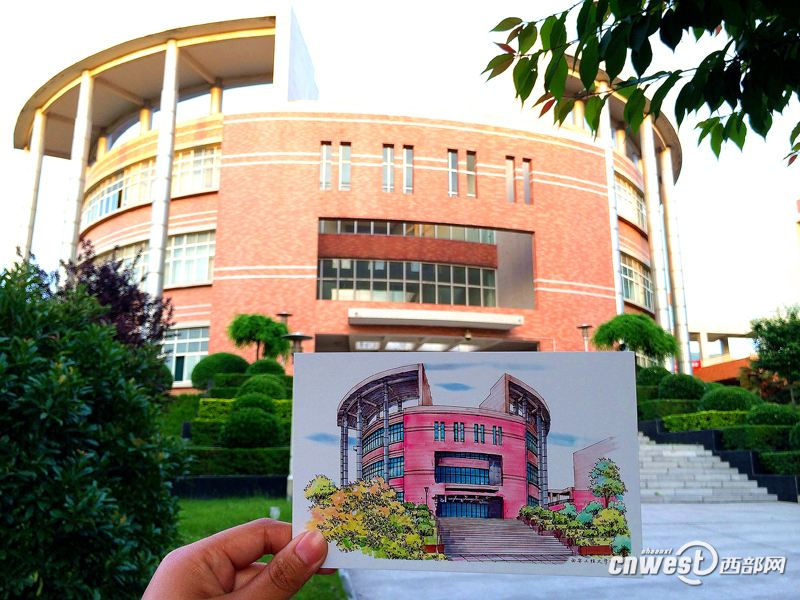

西安工程大学的主教学楼是由A、B、C、D四栋组成，这四栋楼最大的特点就是，它们之间是连在一起的，你可以通过其中的一栋楼，到达任意你想去的其他楼。当然不仅仅是单调的大楼，各个楼的衔接处都有好看的花草，还有阳台。
这是我们的A栋教学楼，它的设计相对就比较简单，A楼与B楼，D楼衔接，A的一楼，穿过去就是其他两个的二楼，在这里就做这样一个简单的介绍好了。

这是我们的B栋教学楼，看起来像一个圆柱，充满了艺术的气息 它是和A、C、D这三栋教学楼相连的，可以通往任意你想去的大楼。也是很神奇了。 这样设计可谓是别出心裁。

这是我们的C栋教学楼,它的地理位置处于最靠外的，因为整个教学楼感觉是建在了一个斜坡上面，C楼处于斜坡的最下面，但也最靠近外面，出行也是很方便了。
这是我们的D栋教学楼，对于D楼而言，它处于整个教学楼的最中心的位置，它的周围有花有草，当然还有衔接的楼啦，它的建造可以说是十分阔气了。其他就不多说了，看图吧。